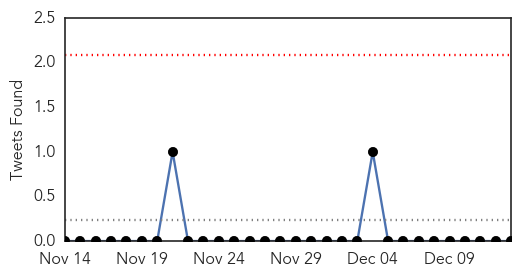
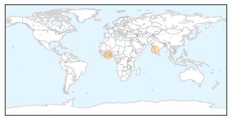
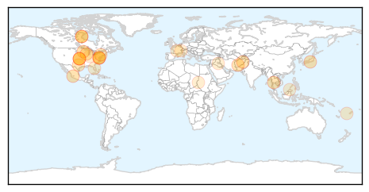
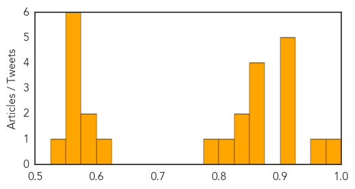

Cholera
30-Day Web Trend
0 alerts, 0 warnings

30-Day Twitter Trend
0 alerts, 0 warnings

Article Locations
Article Confidences

Top Articles:
Top Tweets:
-
No tweets found for Dec 13, 2014
Unknown
30-Day Web Trend
0 alerts, 0 warnings

30-Day Twitter Trend
0 alerts, 0 warnings

Article Locations
Article Confidences
Top Articles:
- 0.979
- More Enterovirus, acute flaccid myelitis cases reported in the US
- 0.959
- Public Health Encourages Flu Shots
- 0.917
- Chicago Tribune
- 0.917
- Chicago Tribune
- 0.917
- Chicago Tribune
- 0.914
- When To Get Care For Flu-Like Symptoms « CBS Minnesota
- 0.910
- The world windows to Thailand
- 0.866
- Suicide bomber destroys bus carrying soldiers in Afghan capital
- 0.866
- Taliban kills 12 demining workers in Afghanistan, police say
- 0.866
- Nicaragua rescues 8 more survivors after shipwreck
- 0.857
- You had chickenpox as a kid? Watch out for shingles
- 0.846
- Wash your hands, cover your cough, get vaccinated — it’s flu season
- 0.837
- Watch out for shingles if you’ve had chickenpox
- 0.818
- Month-old baby dies from Legionnaires' disease after contracting it from home birthing pool
- 0.790
- Causes, Symptoms and Treatment
- 0.623
- Fiji’s Home on the World Wide Web
- 0.598
- Office party in Florida sickens 55 employees, hospitalizes dozens
- 0.581
- Daily Express Newspaper Online, Sabah, Malaysia.
- 0.551
- UN peacekeepers ‘look on’ as ‘Russia-backed’ war rages in Darfur
- 0.551
- Thousands march in Washington, New York against police killings
- 0.551
- Suspected ‘LuxLeaks’ whistleblower hit with theft charges
- 0.551
- Millions make pilgrimage to Iraq’s Karbala despite threat of attack
- 0.551
- Is France’s far-right flirting with the gay vote?
- 0.551
- France’s military brothels: Hidden history of the First World War
- 0.527
- Patients of closed clinics find aid
Top Tweets:
-
No tweets found for Dec 13, 2014